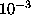
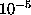
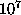
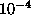
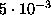
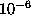
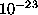
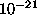
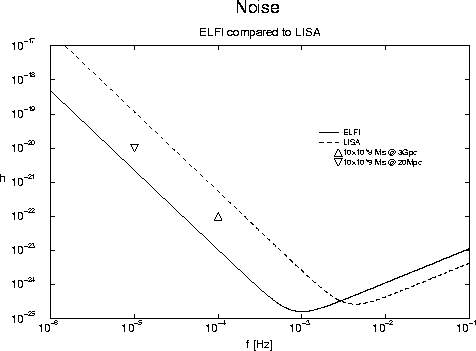

S. Husa, B. Pocza,
R. Steinbauer
Institute for Theoretical Physics,
University of Vienna
Boltzmanng. 5, A-1090 Vienna, AUSTRIA
A. Nairz
Institute for Theoretical Physics,
University of Innsbruck
Technikerstr. 25, A-6020 Innsbruck, AUSTRIA
We outline the basic properties of an interferometric gravitational wave detector in space as a tool for cosmology. Main emphasis is put on a frequency range of about  to  Hz, pushing the sensitivity limit of the currently proposed project LISA [1] down by two orders of magnitude. Thus we expect to detect a variety of cosmological sources [2,3] as opposed to the astrophysical objects accessible to LISA. In particular we focus on the observation of supermassive black holes (>  solar masses) and primordial gravitational wave background. Sufficient sensitivity in this low frequency range is mainly achieved by increasing the arm length of the interferometer by two orders of magnitude as compared to LISA, i.e. to the order of 1 AU. The main obstacles are finding a suitable orbit and controlling the noise due to thermal fluctuations of the sun, which must be regarded as the most important source of noise in this frequency range.
The basic idea is to extend the design concept of LISA, i.e. a cluster of three spacecraft that provide three Michelson interferometers, to the desired wave lengths. The project we propose is called Extra Low Frequency Interferometer (ELFI). The possible arm length is limited by the diameter of the reflecting mirror, the laser wavelength and the ratio of the received to the transmitted laser power. A detailed analysis shows that we can even reach an arm length of 3 AU with a mirror of diameter one meter and a laser wavelenght of 532 nm.
The next question to ask is, where to put such a big instrument? A cluster formed by three spacecraft in a heliocentric orbit at one AU, with relative angles of 120 degrees, phase shifted 20 degrees with respect to the earth combines two major benefits: long equally sized arms and relative ease of reaching the orbit. Mission analysis shows that within approximately 5 years the final orbit can be reached with a reasonable amount of fuel, thereby well fitting into the Ariane 5 payload capability of 3.9 tons.
Although our configuration of spacecraft is bound to stay in the ecliptic plane, full angular resolution is possible for ELFI, since the signals associated with each of the two different polarization modes of gravitational waves show a characteristic pattern of modulation dependent on the position of the source in the rotating rest-frame of ELFI during the period of one year.
Like with LISA the sensitivity of our detector is limited at high frequencies by the photon shot noise and the blow up of the geometrical factor [1]. However, we expect to have a reasonable signal to noise up to frequencies of about 10 mHz.
At the low end the major source of noise comes from spurious accelerations of the proof mass. The hardest task is to control the radiation pressure caused by the thermal fluctuations of the sun which becomes the dominant term at a frequency of about  Hz.
These fluctuations can be estimated to be of the order of  K. However, such big distortions are unacceptable and we have to look for some active temperature control strategies as passive ones won't do the trick. Therefore we propose to heat the spacecraft at an amount of several K above the fluctuation peeks, using a feedback control system that keeps the temperature constant to an accuracy of  K. The amount of power needed was estimated to approximately 5 W/K, which seems quite manageable. The only drawback comes from the necessity of a high accuracy temperature measurement at frequencies of Hz. Assuming that we can suppress down to K at these frequencies (which goes beyond present technology) and also gaining one order of magnitude from emissivity improvement we estimate the strain to be approximately  at Hz and approximately  at Hz respectively, which finally gives us the sensitivity curve of our instrument for a one year observation time as shown in Fig. 1.
We have demonstrated that a Michelson type interferometer with arm lengths of more than 1 AU indeed seems feasible, although such a project will probably not be realized within the next 20 years. Nevertheless, we believe that a comparable instrument will indeed be built in the future and will contribute substantially to our understanding of the universe.

Figure 1. shows the noise curves of the LISA and ELFI detectors; the
strain amplitude h corresponds to the rms detector noise for a one
year observation. Additionally two possible sources are shown.
Acknowledgements: Special thanks to M.D. Moura, I.Domsa and X.Grave for their contributions to our calculations and R.Laurence, W.Winkler and P.Bender for helpful discussions.